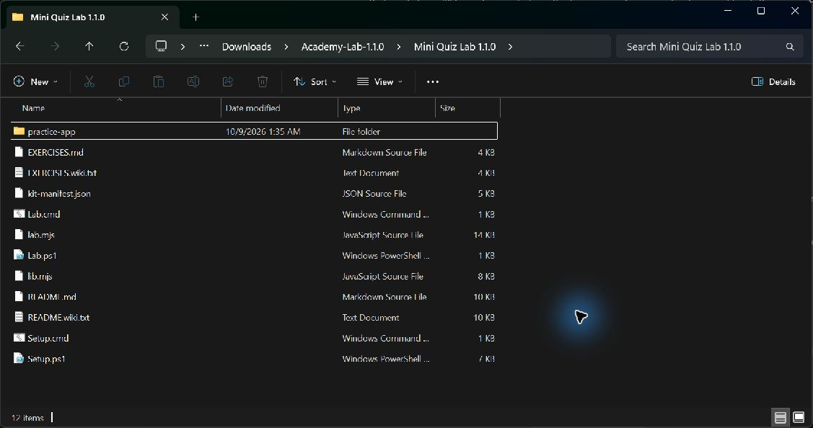
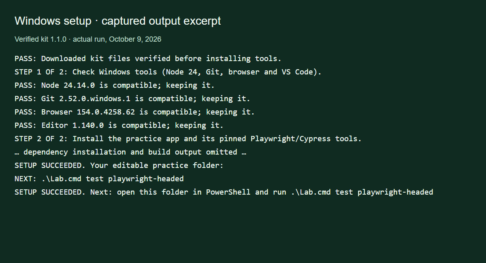
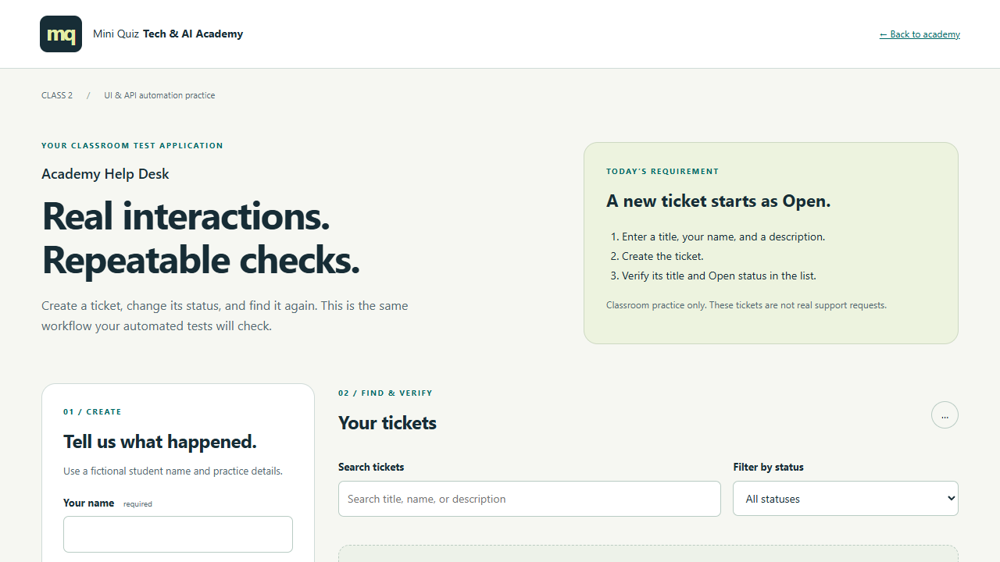
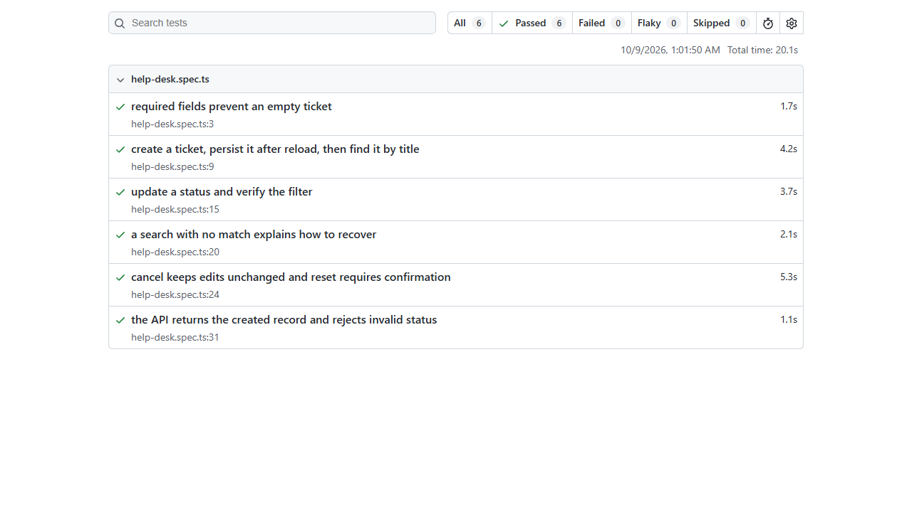

WINDOWS STUDENT GUIDE · KIT 1.1.0
Download. Set up. Watch your first test.
Choose the mouse steps or the PowerShell steps. Both use the same kit. Follow steps 1–6 in order. These instructions install tools on your Windows 10/11 x64 desktop; the instructor-hosted browser workspace has its own workspace login.
You need Internet access and at least 2 GiB of free disk space. Setup checks Node 24, Git, Edge/Chrome and VS Code, then installs the practice app, Playwright and Cypress.
Download Windows kit 1.1.0 →Save the ZIP in Downloads using its original filename. Do not run the kit inside the ZIP.
1. Extract the ZIP
Option A · Use your mouse
- Open File Explorer → Downloads.
- Right-click mini-quiz-lab-1.1.0-windows.zip → Properties. If Unblock appears, select it and click Apply.
- Right-click the ZIP → Extract All. Set the destination to Academy-Lab-1.1.0 inside Downloads, then click Extract.
- Open that folder, then its inner Mini Quiz Lab 1.1.0 folder.
- Choose View → Show → File name extensions to distinguish Setup.cmd from Setup.ps1.
Option B · Use PowerShell
Open Start, search for Windows PowerShell and open it. Type one line at a time and press Enter:
cd "$env:USERPROFILE\Downloads"
Get-ChildItem ".\mini-quiz-lab-1.1.0-windows.zip"
Unblock-File ".\mini-quiz-lab-1.1.0-windows.zip"
Expand-Archive -LiteralPath ".\mini-quiz-lab-1.1.0-windows.zip" -DestinationPath ".\Academy-Lab-1.1.0"
cd ".\Academy-Lab-1.1.0\Mini Quiz Lab 1.1.0"
Get-ChildItem Setup.cmd, Lab.cmdcd changes your current folder. Get-ChildItem checks the file exists. Unblock-File removes the download mark from this ZIP. Expand-Archive extracts it. The second cd enters the kit folder.
If your download is elsewhere, replace the first path with that folder’s full path in quotes. If the ZIP cannot be found, stop and check its name/location. If the destination already exists, use your existing kit; do not overwrite it.

Check: you can see Setup.cmd and Lab.cmd outside the ZIP.
2. Install and check the tools
Option A · Double-click
Double-click Setup.cmd. Keep its window open until SETUP SUCCEEDED appears.
Option B · PowerShell
From the kit folder reached in step 1, run:
.\Setup.cmd.\ means “run the file in this folder.” When Setup asks you to press a key, do so to return to PowerShell.
Compatible tools print PASS and are kept. Missing or unsupported tools are installed or updated, then checked again. Approve a named installer if Windows asks. Setup installs the pinned app/test dependencies, verifies Cypress and builds the Help Desk. It can take several minutes; wait for the final message.

Ready: SETUP SUCCEEDED. Stopped: SETUP STOPPED. Read the first error above it, fix it and rerun Setup.cmd. Repeating setup preserves your working copy.
Setup troubleshooting and optional updates
If App Installer is missing, install/update it from Microsoft Store. A school-managed PC may need its administrator. Do not disable security settings. To request updates for compatible Git/browser/editor installations, run .\Setup.cmd -UpdateTools; ordinary setup already repairs missing or unsupported prerequisites.
3. Open PowerShell in the right folder
If you used PowerShell above, stay in that window. If you double-clicked Setup, open Windows PowerShell from Start and run:
cd "$env:USERPROFILE\Downloads\Academy-Lab-1.1.0\Mini Quiz Lab 1.1.0"
Get-Location
Get-ChildItem Lab.cmdUse your actual extraction path if you chose another destination. Keep quotes around paths containing spaces. Get-Location shows where you are; the next command must list Lab.cmd. A prompt starting at C:\Windows\System32 is fine—cd moves you to the kit.
If “Lab.cmd is not recognized” appears: run the cd command above and check Lab.cmd again. Run kit commands from this folder.
4. Run your first visible Playwright test
.\Lab.cmd test playwright-headedThis builds your saved app, starts its own test server and opens a real browser. Watch it create/search/update Help Desk tickets. Actions are slowed for teaching. You do not need to run “start” first. Keep the terminal open; the browser closes after tests finish.

The unchanged kit has six example tests. Look for 6 passed in the terminal. After editing, a failed check shows a failure and its evidence.
Then open the report:
.\Lab.cmd report
5. Open your files, edit and run again
.\Lab.cmd folderThis opens your editable practice folder in File Explorer and prints its exact path. In VS Code, choose File → Open Folder and select that folder. Open tests/playwright/help-desk.spec.ts, change a test and press Ctrl+S to save.
Return to the original kit PowerShell window and rerun:
.\Lab.cmd test playwright-headedEdit the copy in Mini Quiz Student Work\1.1.0\practice-app, beside the kit. Keep the downloaded template unchanged. Back up Student Work to retain tests and notes.
6. Explore the app yourself
.\Lab.cmd startOpen http://127.0.0.1:4173/ if the browser does not open automatically. Keep this terminal open while practicing. Press Ctrl+C in it to stop the app. Use fictional records; tests use separate data.
Other commands, when your instructor asks
API tests: .\Lab.cmd test api. Cypress: .\Lab.cmd test cypress-open, then E2E Testing → Edge/Chrome → help-desk.cy.ts. Check kit integrity: .\Lab.cmd verify.